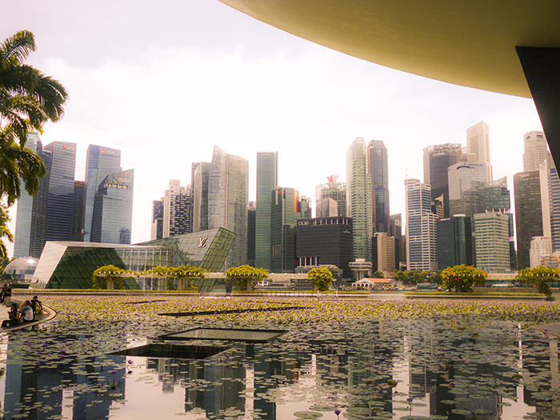

Singapore known for its modern skyscrapers and vibrant man-made landmarks. It’s one of the most popular destinations for those travelling oversea, whether it’s for a layover or a fully planned holiday. It connects people all over the world.
An attraction for all. With multiple gardens to explore the fun never ends.
Located on Sentosa Island - Grab the Sentosa express and find yourself crossing over water to reach the island stopping right in-front of USS. With lots of rides and attractions to see the fun never dies.
Opening Hours
10am - 7pm
Popular Rides
There is a variety of dining options ranging from spaghetti, pizza, burgers and steak. ßAnd many deserts to choose from.